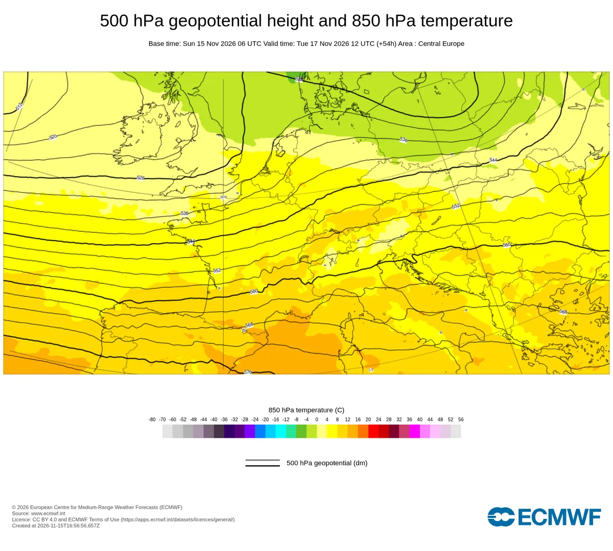

La física detrás del tiempo: un río atmosférico en Andermatt
En Andermatt (2963 m) la previsión da 75 mm de precipitación del 15 de noviembre al 20 de noviembre. En las horas húmedas la isoterma de 0 °C está cerca de 2160 m, así que la cota de nieve ronda los 1860 m.
Consulta la previsión de nieve en tiempo real de Andermatt en la app SnowScopeEspesor de nieve, alertas de nieve polvo y mapa 3D, gratis.
Qué muestra la previsión
En Andermatt (2963 m) la previsión da 75 mm de precipitación del 15 de noviembre al 20 de noviembre. En las horas húmedas la isoterma de 0 °C está cerca de 2160 m, así que la cota de nieve ronda los 1860 m.

La física
Un río atmosférico es una banda de aire larga y estrecha que transporta mucho vapor de agua. Por encima de 250 kg de agua por metro y segundo se habla de río atmosférico, por encima de 750 de uno fuerte. Cuando choca con una cordillera, el aire tiene que subir y enfriarse, el vapor se condensa y las laderas de barlovento reciben más lluvia y nieve.

Qué significa para ti
- Las previsiones cambian: vuelve a mirar el mapa de nieve antes de salir.
- Fuera de pista: lee siempre el boletín oficial de aludes.
Referencias y créditos
- Ralph, F. M., Dettinger, M. D., Cairns, M. M., Galarneau, T. J. and Eylander, J. (2018). Defining 'atmospheric river': how the Glossary of Meteorology helped resolve a debate. Bulletin of the American Meteorological Society 99, 837-839. doi.org/10.1175/BAMS-D-17-0157.1
- Ralph, F. M., Rutz, J. J., Cordeira, J. M., Dettinger, M. D. et al. (2019). A scale to characterize the strength and impacts of atmospheric rivers. Bulletin of the American Meteorological Society 100, 269-289. doi.org/10.1175/BAMS-D-18-0023.1
- American Meteorological Society, Glossary of Meteorology: 'Atmospheric river'. glossary.ametsoc.org/wiki/Atmospheric_river
- Roe, G. H. (2005). Orographic precipitation. Annual Review of Earth and Planetary Sciences 33, 645-671. doi.org/10.1146/annurev.earth.33.092203.122541
- Minder, J. R., Durran, D. R. and Roe, G. H. (2011). Mesoscale controls on the mountainside snow line. Journal of the Atmospheric Sciences 68, 2107-2127. doi.org/10.1175/JAS-D-10-05006.1
- Wallace, J. M. and Hobbs, P. V. (2006). Atmospheric Science: An Introductory Survey, 2nd edition. Academic Press / Elsevier. ISBN 978-0-12-732951-2.
- Forecast data: Open-Meteo.com (CC BY 4.0), from the ECMWF IFS (CC BY 4.0), DWD ICON and NOAA GFS models; snow depth: SnowScope snow model. open-meteo.com/
Sobre estas cifras
Cifras de la previsión del 15 de noviembre: precipitación, temperatura y viento a varias alturas en los lugares citados. La isoterma de 0 °C se calcula a partir del perfil de temperatura; la cota de nieve se toma unos 300 m por debajo. Las previsiones cambian.
Citar este informe
Para investigación, docencia o prensa: cifras y gráficos reutilizables libremente bajo CC BY 4.0 con esta cita.
SnowScope (2026), La física detrás del tiempo: un río atmosférico en Andermatt, https://snowscope.app/blog/es/2026/11/alps-physics-an-atmospheric-river-15-november-2026.html, consultado el 2026-11-15
SnowScope (Atlas Labs). (2026, November 15). La física detrás del tiempo: un río atmosférico en Andermatt. SnowScope snow reports. https://snowscope.app/blog/es/2026/11/alps-physics-an-atmospheric-river-15-november-2026.html
BibTeX
@misc{snowscope2026alpsphysicsanatmospheric,
author = {{SnowScope (Atlas Labs)}},
title = {La física detrás del tiempo: un río atmosférico en Andermatt},
year = {2026},
month = nov,
howpublished = {\url{https://snowscope.app/blog/es/2026/11/alps-physics-an-atmospheric-river-15-november-2026.html}},
note = {Published 2026-11-15 17:57 UTC; accessed 2026-11-15}
}· CC BY 4.0 · Métodos, datos y herramientas →
Sigue Andermatt
Gratis: un aviso cuando llega la nieve y la previsión cada mañana.